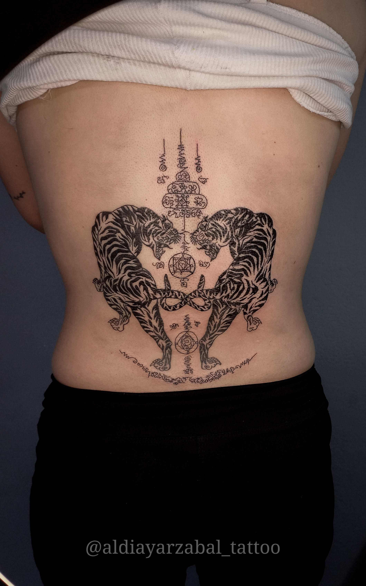
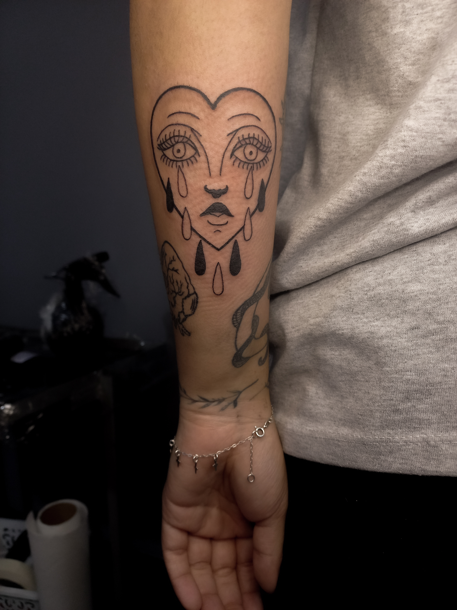
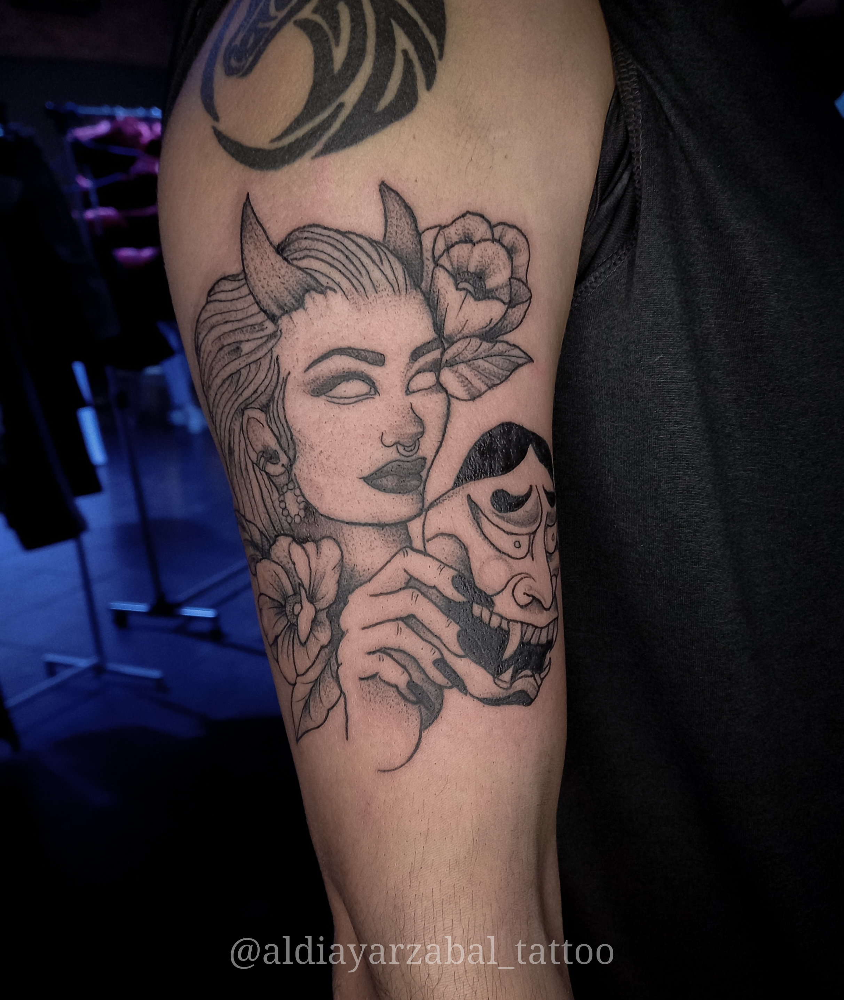
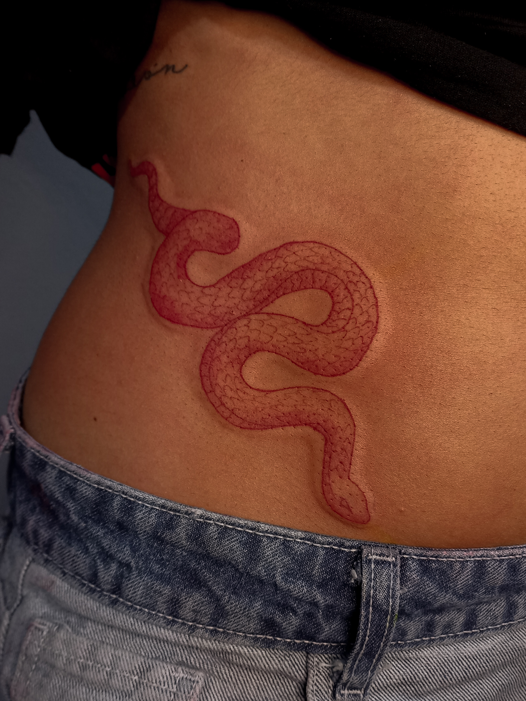

Pulpo Blackwork con puntillismo de arrastre

Pulpo Blackwork con puntillismo de arrastre
Tigres Tradicional tailandés
Corazón Blackwork
Diabla Blackwork
Cuervo Blackwork con fondo watercolor

Serpiente Fineline
Mariposa Cover up